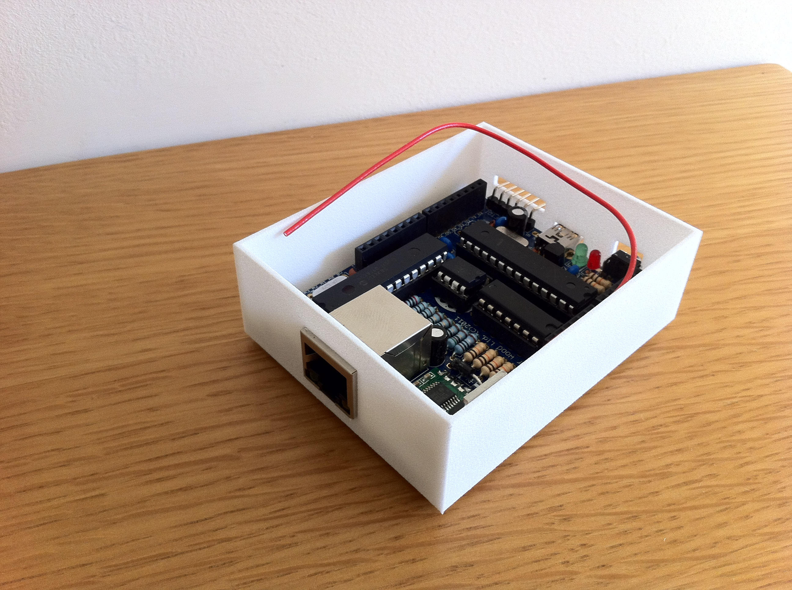

I had a simple case for my NanodeRF printed on Shapeways. It only took an hour or so to draw in Google SketchUp. I used a vernier guage to get the measurements.

Full sized image here. A couple more images here and here
It is a rather tight precise fit, the Ethernet hole is exactly the right size! I needed to bend the case a little to fit it in. The hole for the reset button is a little out and the FTDI connector is a bit too snug. The plastic finish is excellent, but it is crazy expensive,€32.68 shipped to the UK. The only small issue would be if you wanted to use and external PSU and wanted to add a heat sink to the regulator. There is no room for that in this design.
I did not bother with a lid, as I wanted to make sure the base fitted first.
Mark
Re: Simple case for NanodeRF - Shapeways
Good effort.
NottingHack, and maybe others, have got a laser cutter....if there's a demand, Im sure it would be possible to produce a few if costs+ are covered.
Might also be worth posting to the Nanode website/direct to Ken....
Re: Simple case for NanodeRF - Shapeways
Nice! is it 3D printed? Could you post the design for others to use?
Cheers,
Re: Simple case for NanodeRF - Shapeways
Sure, let me tweek the design, just a little so the reset button hole is a little more aligned. I will post tomorrow.
It was 3D printed by Shapeways.
Re: Simple case for NanodeRF - Shapeways
You can download the SketchUp 3D model from here. I have very slightly updated the model, compared to the one I had printed. This should mean the reset button hole (which in hindsight could be small and round) and the FTDI connector hole are better aligned.